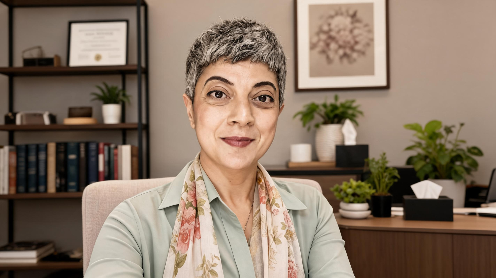

Hikayeni dinleyen
homeopati.
2008'den beri — dogmadan uzak, sonuç odaklı

Hom. Hande Özçıkrıkçı (DiHom, MARH, CHE)
1790'da Alman hekim Samuel Hahnemann, çevirisini yaptığı bir tıp kitabında kınakına bitkisinin acı olması sebebiyle sıtma hastalığına iyi geldiğini okur— ama bu bilgi onu tatmin etmez, bitkiyi kendi üzerinde denemeye karar verir. Bu bitkiyi düzenli kullandığında sağlıklı bedeninde sıtmaya benzer belirtiler oluştuğunu gözlemler. Demek ki bu bitki acı olması sebebiyle değil, sıtmaya benzer semptomlar ortaya çıkardığı için sıtma hastalarına iyi geliyordur. Bu gözlemden homeopati geleneğinin iki yüzyıldır değişmeyen ilkesi doğar: benzer benzeriyle iyileşir. Bir madde sağlıklı insanda hangi tabloyu oluşturuyorsa, hasta bir insanda benzer semptomları iyileştirme gücüne sahiptir.
On sekiz yıldır pratiğim tam da bu kaynağa dayanıyor: Hahnemann'ın Organon'una sadık, o anın simillimum'unu arayan ve seanslar arasında titizlikle gözlem yapan bir anlayışla çalışıyorum. Tek remedi arayan dogmatik yaklaşımlardan, muğlak ruhsal yorumlardan uzak kaynağına uygun bir pratik yapmaya gayret ediyorum. Çünkü bedenin dili ve homeopatın sağlam gözlemi yalan söylemiyor.
Danışanlarımın çoğu bana bir danışanımın tavsiyesiyle geliyor; en zor vakalar ise meslektaşlarımın "bu hikâyeyi bir de Hande dinlesin" diyerek yönlendirdiği danışanlar oluyor. Bu benim için keyifli bir sorumluluk. Öğrencilerime aktardığım şey ise bilginin ötesinde, bakış açısı ve tekniğin doğru uygulanışıdır. Dogmadan ve spekülasyondan uzak, çağın gerçeklerine uyumlu bir homeopati anlayışını aktarmayı bir borç biliyorum.
Bir Seansın Anatomisi
Acelesiz
Hikâyenizi kendi dilinizle anlatmanızı isterim — 90 dakikalık bir seansta sizin dilinizi homeopati diline çevirerek doğru remediye ulaşırız.
Beden Belirtileri
"Eskiden üşüyordum, şimdi yanıyorum", "acı artık mideme dokunuyor", " Başım sadece tek taraflı ağrıyor ve her gece 3'te uyanıyorum"... Yaşam gücünün beden yoluyla konuşmasını izleriz — ve beden yalan söylemez.
Mental ve Duygusal Belirtiler
Mizacınız, kaygılarınız, sevinçleriniz, tekrar eden örüntüleriniz — spekülasyona izin vermeden, rahatsızlığa zemin oluşturan duygu durumlarını ve yatkınlıkları konuşuruz.
Ailenizin öyküsünden gelenler
Kuşaklardan aktarılan eğilimler ve ailenizin sağlık örüntüleri de hikâyenin parçasıdır — homeopatik anlayışta buna 'miyazma' denir.
Ben Kimim?
2008 yılında, henüz 26 yaşımdayken bu mesleğe adım attığımda, Türkiye'de homeopati yeni filizlenen bir alandı. Yolun ne kadar emek, özveri ve titizlik isteyeceğini o yaşta bilemezdim — ve iyi ki bilemezdim. O çetrefilli ama bir o kadar dönüştürücü yolculuk, bugün hala en büyük tutkum.
Aradan geçen on sekiz yılın ardından homeopati benim için artık bildiğim bir dost. Karmaşık hikâyelerle ve cevapsız kalmış sorularla uğraşırken hâlâ ilk günkü merakı taşıyorum; insana ve onun hikâyesine bir kapı aralayan bu yöntemde öğrenciliğim hiç bitmiyor. İnsan odaklı, detaylara tutkun, titiz ve sezgileri güçlü mizacımın bu yoldaki en büyük yol arkadaşım olduğunu biliyorum.
Eğitim yolculuğum boyunca üç farklı ülkede klinik gözlemler yaptım ve pek çok değerli hocayla çalışma fırsatı buldum. İlk diploma eğitimimi tamamlarken meslektaşlarımla birlikte Homeopati Derneği'nin kuruluşunda yer aldım. 2018'de Centre for Homeopathic Education'ın Türkiye kanadında eğitmen olarak görev aldım. Bugün İskoçya'da kendi kliniğimde, Edinburgh ve dünyanın her yerinden danışanlarıma hizmet veriyor; homeopati öğrencilerine ve homeopatlara süpervizyon ve ileri düzey eğitimler sunuyorum.
Tüm bu yolculuğun sonunda vardığım yer, yine her şeyin başladığı nokta oldu: Hahnemann ve Organon. Bu, en çok gurur duyduğum konulardan biri — homeopatinin ilkeleri neredeyse üç yüzyıldır değişmedi. Dünya değişti, hastalıklar değişti; ama Hahnemann'ın asırlar önce ortaya koyduğu ilkeler, bugün hâlâ çalışmamın pusulası. Kökleri bu kadar derin ve bütünlüklü bir yaklaşım dünyada çok az bulunur. Bu yaklaşımla tanışabilen herkesi — ve kendimi — çok şanslı görüyorum.
Ve bu yolda bana güvenen binlerce danışana gönülden teşekkür ediyorum.
Eğitim ve Süpervizyon
Hâlihazırda pratiğe başlamış homeopatlar ve öğrenciler için ileri düzey, vaka ve pratik temelli eğitim ve bireysel/grup süpervizyonu.
Akut Homeopati Eğitimi·Organon ve Similimum Bulma Eğitimi·Miyazmalar Eğitimi·Otoimmün ve Kompleks Vakalarda Organopati Eğitimi·Remedi Haritaları Eğitimi
Eğitim tarihleri 20 Eylül 2026’da duyurulacaktır.
Homeopati nedir? — benzerler yasası ve yapay hastalık
Okuyun →Hangi Rahatsızlıklar için Homeopati?
Burada kriter hastalığın adı değil; hastanın yaşam gücü.
Okuyun →İyileşme Krizi Şart mı?
Bu ne gerekli, ne ideal, ne de romantize edilecek bir etki.
Okuyun →Yapısal Remedi Efsanesi — Gerçek mi?
Tüm şikayetlere iyi gelen, hayat boyu değişmeyen bir "ruh eşi remedi" yanılsaması üzerine kurulu bir efsane.
Okuyun →Remedi Haritaları
Dünya değişti ama homeopatik bilginin tutarlılığı değişmedi.
Okuyun →Remedilerin Cinsiyeti Olur mu?
Erkeğe atfedilen ve gözden kaçan 3 kadın remedisi.
Okuyun →“Hastalık bizi konfordan, konforsuz hal ise özgürlükten uzaklaştırır.